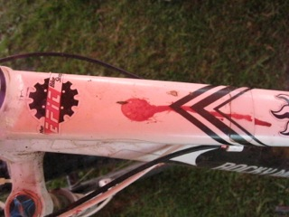

About Us
Who are we? Lance Stephenson and Neville Cragg, two cyclists with a love of bicycles and all the bits that go with them.
Neville (Nevzilla) Cragg is a silver medalist in the SA Time Trial champs, double WP TT Champion and twice overall SV Road League winner. Neville is also an accomplished mountain biker having competed in and completed 3 ABSA Cape Epics (coming 33rd overall in 2010) making him a member of the coveted Amabubesi finishers club. He has also completed the Cape Pioneer Trek, Sani2C and twice won WP XCO Provincials overall. On the road he has ridden three SA Championships, UWCT World Masters Championships, the Giro Del Capo and Tour De Boland.
Neville is the analytical numbers and weights guy, has his finger on the pulse in the latest bikes and tech so he will know the difference in weight between groupsets and the drag co-effecient of long socks. He is also very handy in the workshop and knows his way around a bike, and has a penchant for problem solving and making things work, whether by design or not. Click here to read more
Lance (the Wrench) Stephenson is an MTBer through and through. He has raced many XCO/Downhill and Marathons and has podiumed in all disciplines of mountain biking. Lately he has turned his focus to 24hour MTB solo racing and has podiumed at this mad discipline too! Not a well puppy.
Lance is the spanner yielding one, who knows how to tune your bike just right and how to repair your carbon frame when you crash.Lance has been building wheels since he was in primary school and has dedicated much of his time to learning this black art. Lance also does amazing carbon fibre repair work, there's even talk of his own bike soon. Lance is also an author of a "How to" segment in Bicycling Magazine, and is also part of a test group for product testing. Gear testers from other magazines also land up at The Epic Bike Shop, getting a tech run down of the latest kit with Lance and value his advice.
Their first outing together was a winning combination taking the two man team honours at the Delvera 9-5, 8 Hour Enduro.
They both accept coffee as bribes!

All Rights reserved
Built and maintained by Warwick Levey. For more info clickhere